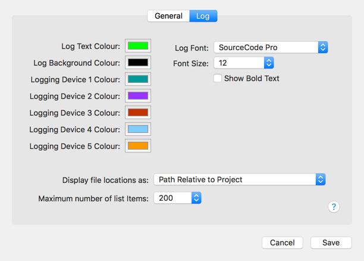

Squinter 2.0“A Squirrel Integrator”
Contents |
Configuring Squinter
To take full advantage of Squinter’s features, you will need an Electric Imp account. With Squinter 2.0 you no longer require a Build API key. Instead you must sign into your account before Squinter can access the Electric Imp impCloud on your behalf. When you first run Squinter 2.0, it will ask you for these credentials and give you the option to store them securely in your keychain to automate login in future. The ‘Account’ menu provides a means to log into your account later if you choose not to do so at the start, or to subsequently sign out.

Squinter’s Preferences panel includes a setting to log in when Squinter starts up. Other options include compiling the code linked to all of a Project’s Device Groups when a Project is opened, and automatically retrieving the latest device and Product information at log-in.
In addition, Preferences contains settings for the colour of Squinter’s log pane, which mono-spaced font is used, and how file paths should be displayed.

Squinter would not be possible without open source software contributions from a number of developers. They are listed in the ‘Acknowledgements’ section of the ‘Help’ menu, along with links to the source code Squinter uses.